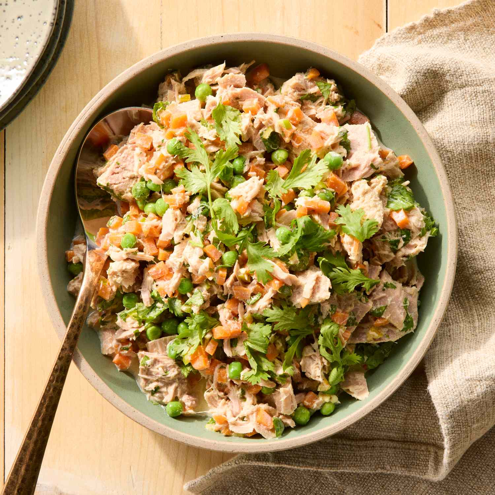

Mediterranean Tuna Salad
⏱️ 10 mins · no cook
Easy

Ingredients
- 2 cans albacore tuna (150g each), drained
- 1 can chickpeas, rinsed
- ½ red onion, finely chopped
- 1 cup cherry tomatoes, halved
- ¼ cup fresh parsley, chopped
- 2 tbsp extra virgin olive oil
- Juice of 1 lemon
- Salt, pepper, dried oregano
≈ 32g protein · high fiber
Method
- Flake the tuna into a large bowl using a fork.
- Add chickpeas, red onion, cherry tomatoes, and parsley.
- Drizzle with olive oil and lemon juice. Season with salt, pepper, and oregano.
- Toss everything gently until well combined.
- Serve immediately or chill for 20 minutes for a refreshing meal. Pairs well with pita or lettuce wraps.